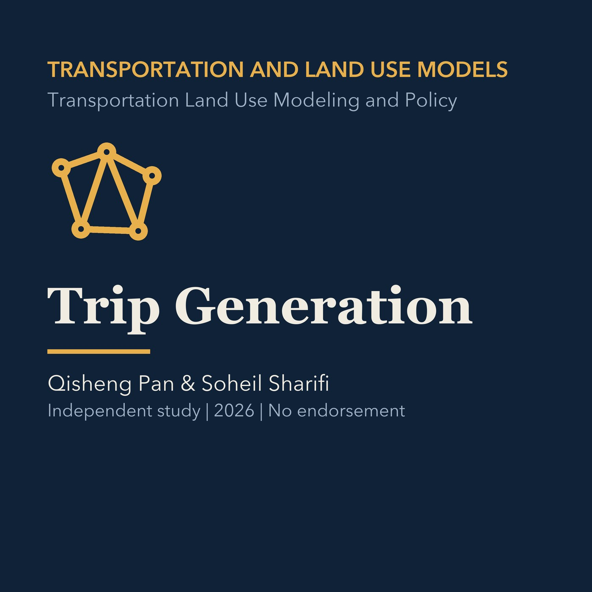

EPISODE 10
Trip Generation
Explains trip productions, attractions, purposes, rates, regression, balancing, and sensitivity, with a separate Torrance development-review application.

- Stable GUID
89dec883-e613-5998-ada0-93f37c999a53- Release
- transportation-land-use-modeling-v2026.2
- SHA-256
1e532cb209fd60f829e9fb659d62fe55938fb9230467622a0c5eac160495cec3